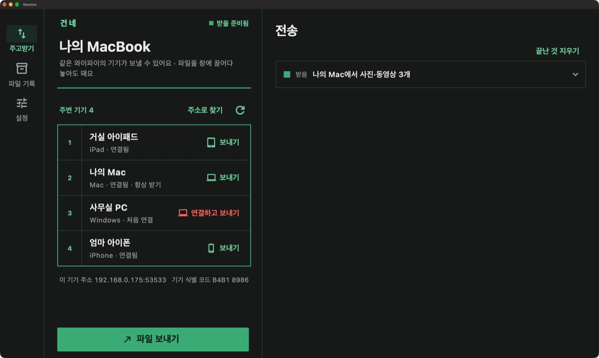
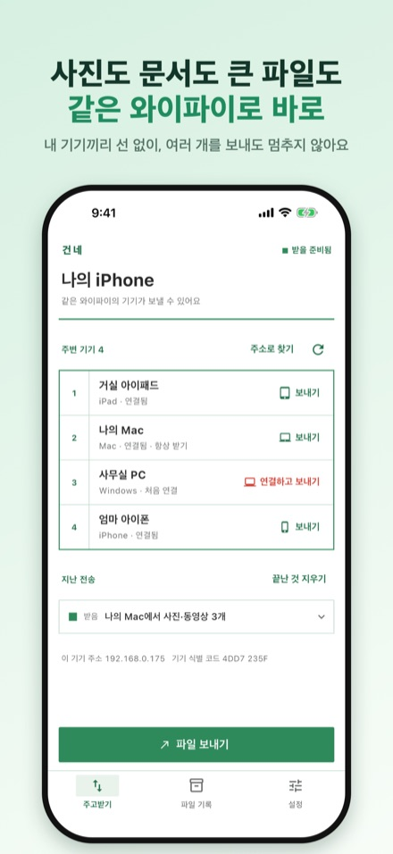
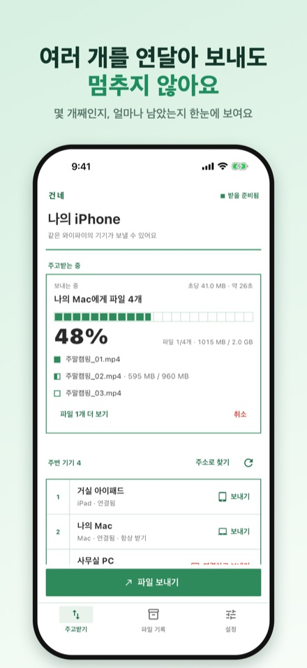
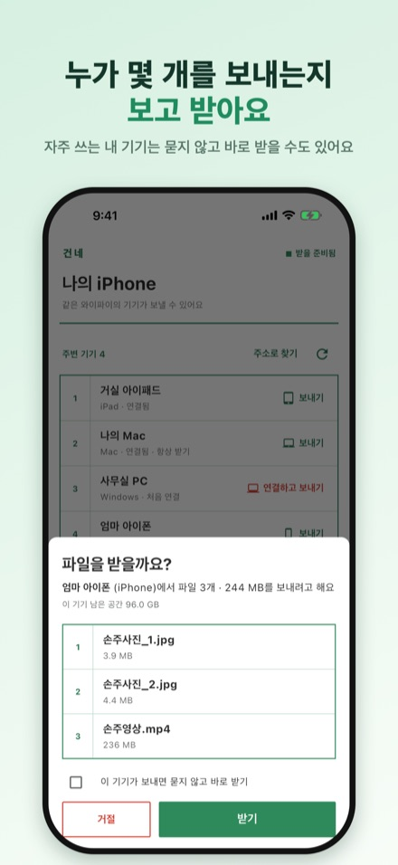
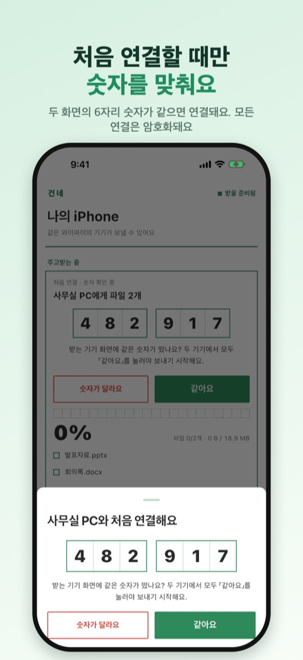
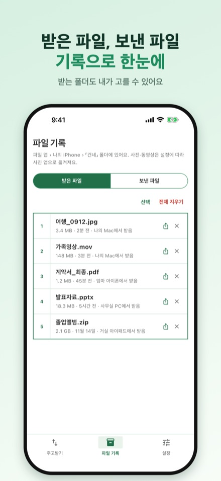
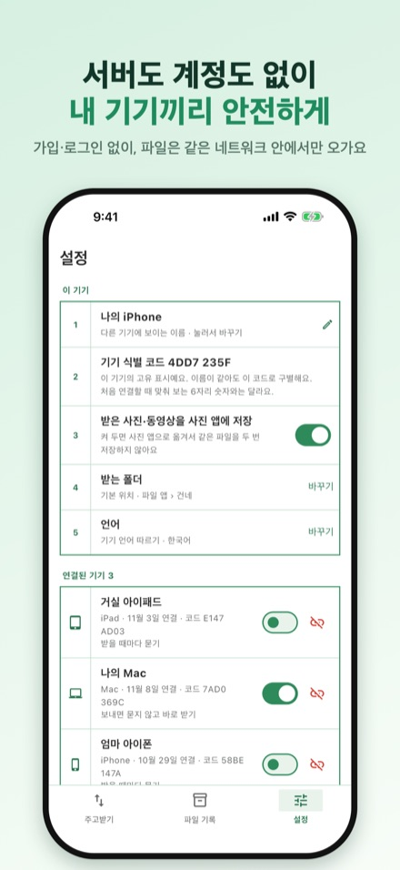

사진도 문서도 큰 파일도같은 와이파이로 바로.
같은 와이파이에 있는 내 기기끼리 선 없이 바로 주고받는 앱입니다. 여러 개를 연달아 보내도 멈추지 않고, 끊겨도 남은 파일만 이어서 보냅니다. 서버도 계정도 없이 기기끼리 직접 오가고, 모든 연결은 암호화됩니다.
아이폰·아이패드·안드로이드 앱은 App Store와 Google Play에서 받을 수 있습니다.

이럴 때 써요
사진·동영상
여행에서 찍은 사진과 영상을 폰에서 맥·PC로 바로. 케이블도 클라우드도 거치지 않습니다.
문서·파일
계약서, 과제, 압축 파일을 내 기기끼리 선 없이 주고받습니다.
큰 파일
수 GB 영상도 그대로. 여러 개를 연달아 보내도 멈추지 않고, 끊겨도 남은 파일만 이어 보냅니다.
이렇게 보여요
아이폰 화면 예시입니다. 기기 이름과 파일은 예시예요.






믿고 쓰는 이유
서버도 계정도 없이
파일은 인터넷 서버를 거치지 않고 같은 네트워크 안에서 기기끼리 직접 오갑니다. 회원가입·로그인이 없습니다.
암호화와 6자리 확인
모든 연결은 암호화되고, 처음 연결하는 기기는 두 화면의 6자리 숫자를 맞춰야 연결됩니다.
어디서든 같은 앱
아이폰·아이패드·안드로이드·맥·윈도우에서 같은 방식으로 쓰고, 한국어·English·日本語·繁體中文를 지원합니다.
자주 쓰는 기기는 바로 받기
내 기기는 「항상 받기」로 묻지 않고 받고, 받은 파일·보낸 파일 기록도 볼 수 있습니다.
받기
아이폰 · 아이패드
안드로이드 폰 · 태블릿
macOS 12 이상 · 약 12MB · 애플 공증 완료
설치 방법 보기
윈도우 10·11 (64비트) · 약 12MB
설치 방법 보기
최신 판: 1.0.0 · 2026년 11월 16일 · 맥·윈도우 앱에는 광고가 없습니다
맥에 설치하기
-
받은 파일을 엽니다
위 [맥 설치 파일 받기]로 받은 Geonne-1.0.0.dmg를 두 번 누르면 작은 창이 열립니다.
-
건네를 응용 프로그램 폴더로 끌어다 놓습니다
창 안의 Geonne 아이콘을 옆에 있는 Applications(응용 프로그램) 폴더로 끌어다 놓으면 설치가 끝납니다. 설치 뒤에는 dmg 창을 닫고 휴지통으로 옮겨도 됩니다.
-
응용 프로그램에서 건네를 엽니다
처음 열 때 “인터넷에서 받은 앱입니다”라는 확인 창이 뜨면 [열기]를 누르세요. 애플의 검사를 거친 앱이라 그 밖의 경고는 뜨지 않습니다.
-
“로컬 네트워크” 허용 창에서 [허용]
같은 와이파이의 다른 기기를 찾으려면 꼭 필요합니다. 실수로 막았다면 시스템 설정 → 개인정보 보호 및 보안 → 로컬 네트워크에서 Geonne를 켜 주세요.
윈도우에 설치하기
-
설치 파일을 받아 엽니다
위 [윈도우 설치 파일 받기]를 누르면 Geonne-Setup-1.0.0 파일이 다운로드 폴더에 저장됩니다. 받은 파일을 두 번 눌러 엽니다.
-
“Windows의 PC 보호” 창이 뜨면 [추가 정보] → [실행]
아직 마이크로소프트 인증서를 붙이지 않은 작은 회사의 프로그램이라 처음에 이 안내가 뜰 수 있습니다. 창 안의 [추가 정보]를 누르면 앱 이름 Geonne-Setup-1.0.0.exe와 게시자가 나타나고, 아래에 [실행] 버튼이 생깁니다. 이때 [실행]을 누르세요.
창 색깔은 PC의 색 설정에 따라 파랑·보라 등으로 다르게 보일 수 있어요. -
설치 마법사에서 [다음] → [설치] → [마침]
관리자 비밀번호 없이 지금 로그인한 사람에게 설치되는 것이 기본입니다. 바탕화면 바로가기가 필요하면 체크하세요. 마지막에 [Geonne 실행]을 체크한 채 [마침]을 누르면 바로 켜집니다. 다음부터는 시작 메뉴의 Geonne로 엽니다.
-
방화벽 창이 뜨면 [액세스 허용]
“Windows Defender 방화벽에서 이 앱의 일부 기능을 차단했습니다” 창이 뜨면, 프라이빗 네트워크에 체크가 되어 있는지 확인하고 [액세스 허용]을 누르세요. 막으면 다른 기기가 서로 보이지 않습니다.
처음 연결해서 보내기
-
두 기기에서 건네를 엽니다
같은 와이파이에 연결된 두 기기에서 건네를 열면, 몇 초 안에 서로의 주변 기기 목록에 나타납니다.
-
보낼 기기의 [보내기]를 누르고 파일을 고릅니다
처음 보는 기기는 [연결하고 보내기]입니다. 맥·윈도우에서는 파일을 창에 끌어다 놓아도 됩니다. 여러 개를 한꺼번에 고를 수 있고, 큰 파일도 그대로 보냅니다.
-
처음 한 번만 6자리 숫자를 맞춰 봅니다
처음 만나는 기기끼리는 두 화면에 같은 6자리 숫자가 뜹니다. 같으면 두 기기에서 모두 [같아요]를 누릅니다(받는 쪽 버튼은 [같아요, 받기]). 그러면 전송이 시작되고, 다음부터는 숫자를 묻지 않습니다.
-
받는 기기에서 [받기]
이미 연결해 둔 기기에서 파일이 오면 누가 몇 개를 보내는지 보고 [받기]를 누릅니다. 자주 쓰는 내 기기는 「항상 받기」로 묻지 않고 바로 받을 수도 있습니다.
자주 묻는 것
상대 기기가 목록에 안 보여요
두 기기가 같은 와이파이인지, 양쪽에서 건네가 열려 있는지 확인하세요. 공유기의 “AP 격리”나 회사·카페의 손님용 와이파이는 기기끼리 서로 보이지 않게 막기도 합니다. 그럴 때는 건네 화면의 [주소로 찾기]에 상대 기기의 주소를 직접 넣으면 연결됩니다. 맥은 로컬 네트워크 허용, 윈도우는 방화벽 허용도 확인해 주세요.
파일이 인터넷 서버를 거치나요?
아니요. 파일은 같은 네트워크 안에서 기기끼리 직접 오가고, 모든 연결은 암호화됩니다. 회원가입이나 로그인도 없습니다.
폴더째 보낼 수 있나요?
아직 지원하지 않습니다. 폴더는 압축 파일(zip)로 만들어 보내 주세요.
새 버전은 어떻게 받나요?
이 페이지에서 새 설치 파일을 받아 그대로 설치하면 이전 판 위에 덮어 설치됩니다.
지우려면?
맥은 응용 프로그램 폴더의 Geonne를 휴지통으로 옮기면 됩니다. 윈도우는 설정 → 앱 → 설치된 앱에서 Geonne를 찾아 [제거]를 누르세요.
개인정보는 어떻게 되나요?
맥·윈도우 앱은 광고와 계정이 없고, 파일과 기록은 내 기기 안에만 있습니다. 자세한 내용은 개인정보처리방침을 보세요.
문의하기
사용 문의, 오류 신고, 개인정보 관련 문의를 받습니다.